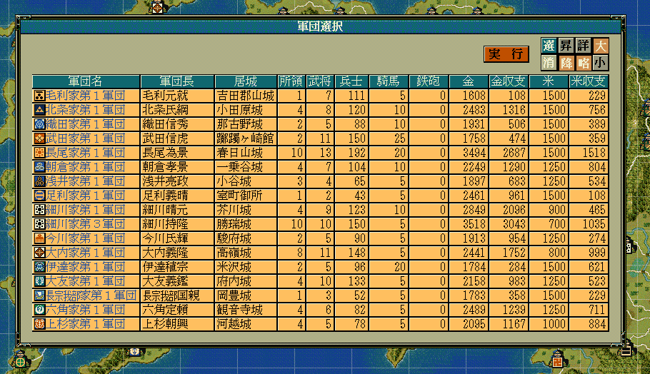
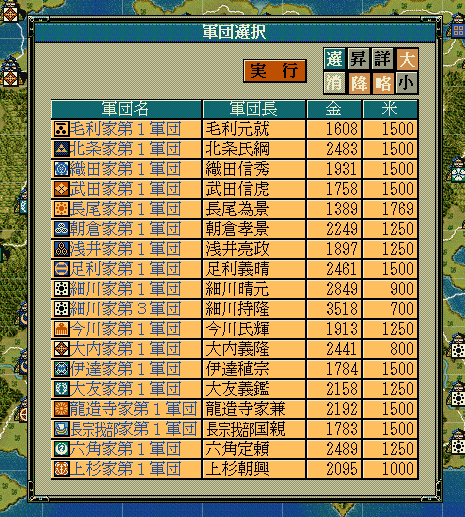
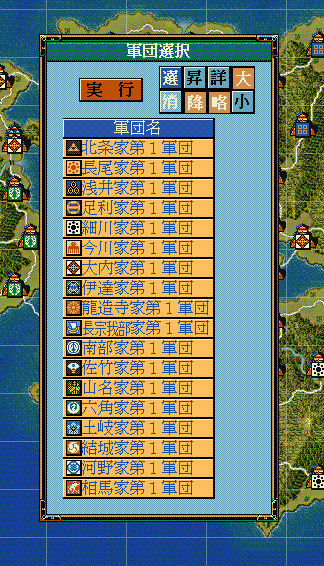
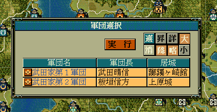

軍団のリストを表示して、そこから選択してもらうためのダイアログを表示するAPIです。
大小関わらず、自作の独自イベントなどで利用することになるでしょう。
void カスタム::On_プレイヤ担当ターン《メイン画面》() {
// 金＋米が両方3000を超える軍団を表示・選択
番号リスト型 ShowGundanList;
for (int iGundanID = 0; iGundanID < 最大数::軍団情報::配列数; iGundanID++) {
if ( (p軍団情報[iGundanID].金 + p軍団情報[iGundanID].米) > 3000) {
ShowGundanList.push_back(iGundanID);
}
}
int iSelectedGundanID = 選択軍団ダイアログ表示(ShowGundanList, カラム::軍団::デフォルト);
if (0 < iSelectedGundanID && iSelectedGundanID < 最大数::軍団情報::配列数) {
int iBushouID = p軍団情報[iSelectedGundanID].軍団長【武将番号】-1;
if (0 <= iBushouID && iBushouID < 最大数::武将情報::配列数) {
デバッグ出力 << Get_名字(iBushouID) + Get_名前(iBushouID) << "の支配する軍団が選択されました" << endl;
}
}
else {
デバッグ出力 << "軍団は選択されませんでした" << endl;
}
}

int iSelectedGundanID = 選択軍団ダイアログ表示(ShowGundanList, カラム::軍団::軍団長|カラム::軍団::金| カラム::軍団::米);

int iSelectedGundanID = 選択軍団ダイアログ表示(ShowGundanList, カラム::軍団::名称);

void カスタム::On_軍団ターン変更《メイン画面》(int 軍団番号) {
// 軍団ターンが回ってきているが、それがプレイヤーが担当している軍団で、かつ大名直轄の軍団（第１軍団）である。
int iGundanID = 軍団番号 - 1;
if (Is_プレイヤ担当軍団(iGundanID)) {
// 第１軍団は常に大名自身の軍団。
if (p軍団情報[iGundanID].軍団割当番号 == 1) {
int iDaimyoID = p軍団情報[iGundanID].所属大名【大名番号】-1;
if (0 <= iDaimyoID && iDaimyoID < 最大数::大名情報::配列数) {
番号リスト型 list = Get_大名麾下軍団番号リスト【配列用】(iDaimyoID);
int iSelectedGundanID = 選択軍団ダイアログ表示(list, カラム::軍団::軍団長|カラム::軍団::居城);
if (0 < iSelectedGundanID && iSelectedGundanID < 最大数::軍団情報::配列数) {
int iBushouID = p軍団情報[iSelectedGundanID].軍団長【武将番号】 - 1;
if (0 <= iBushouID && iBushouID < 最大数::武将情報::配列数) {
デバッグ出力 << Get_名字(iBushouID) + Get_名前(iBushouID) << "の支配する軍団が選択されました" << endl;
}
}
else {
デバッグ出力 << "軍団は選択されませんでした" << endl;
}
}
}
}
}

「軍団ダイアログ」に関する主な所は以上となります。 詳しくは「ダイアログ情報型.h」を参照してください。